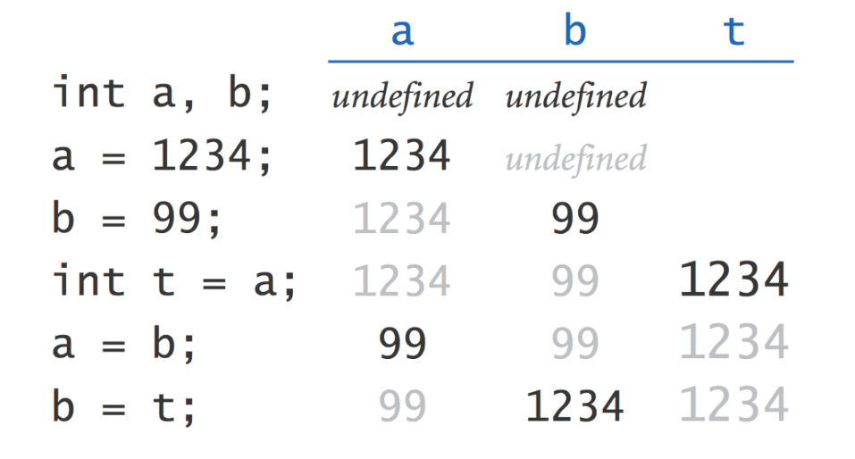

Professor Abdul-Quader
Lesson 1
Variable: named location in memory.
int.Primitive type:
What are the values of \(a\) and \(b\) after the following code executes:

If you read chapter 2: what are some operations that we can do with variables (and/or literals)?
Which of the following are legal / illegal:
Try these out:
int num1 = 5;
int num2 = 10;
System.out.println(num1 + num2);
System.out.println(num1 - num2);
System.out.println(num1 * num2);
System.out.println(num1 / num2);
System.out.println(num1 % num2); // remainder operatorDo any of these output anything different from what you expected?
How do we make sure Java processes “3 / 2” as a decimal expression?
System.out.println(3.0 / 2); or,System.out.println( (double) 3 / 2);The second version is called an explicit cast. We tell Java to treat 3 (an integer) as a double.
In small groups (two or three, or whatever is convenient at your table). What are all the differences between:
x + 7 andy = x + 7;Based on previous coding knowledge / experience: which of these is a valid statement?
We often want to assign a variable a value that is based on its current value. For example:
This is so common that many languages (including Java) have compound assignment operators: +=, -=, *=, /= and %=. \(x += y\) means assign the value of \(x + y\) to the variable \(x\).
On paper: make a memory diagram and determine the final values of \(x\) and \(y\).
Values of \(x\) and \(y\) after this? Memory diagram.
Trivia: Difference between \(x++\) and \(++x\)?
JVM can automatically convert int to double: no loss of information. Other way around: need an explicit cast:
double x = 0.7;
double y = 0.9;
double a = x + 0.1;
double b = y - 0.1;
System.out.println(a);
System.out.println(b);What do we think this will output? What does it output?
Floating point values often have rounding errors. (Why?) Solution? (Avoid doubles and floats if possible)
American format:
Thursday, July 16, 2015
European format:
Thursday 16 July 2015Submit this on Replit before next class!
By now, we know how to:
Coming up: